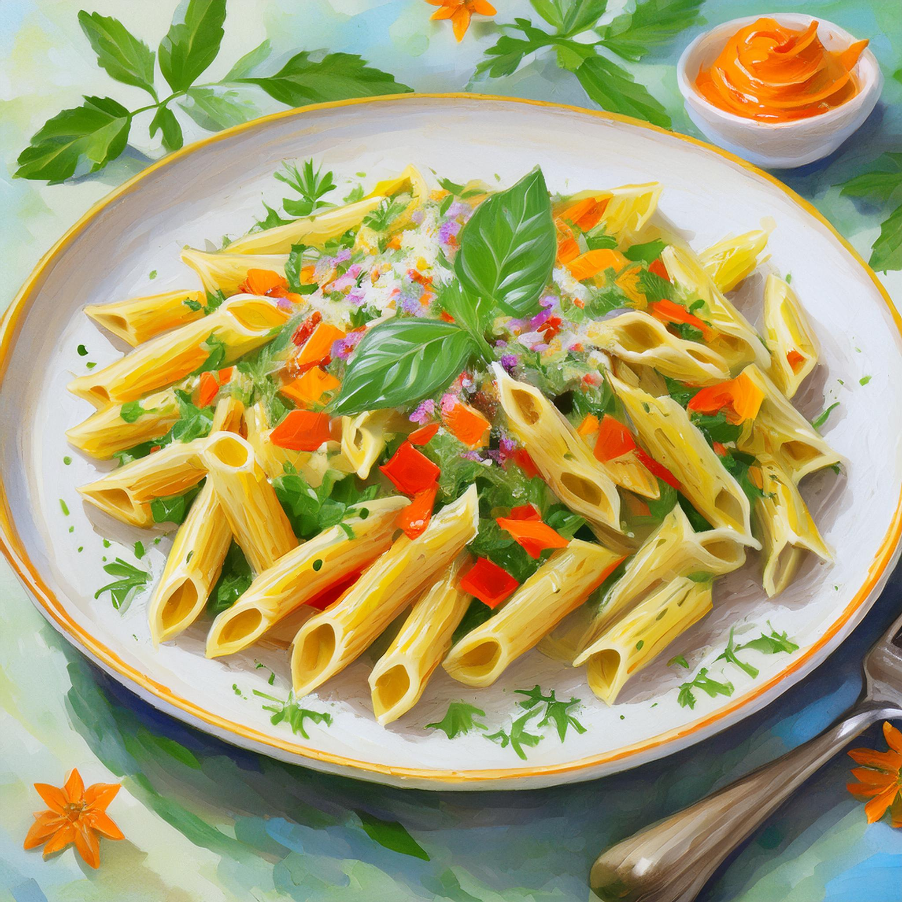

Pasta with Vegetable Sauce

Description
This is a simple recipe for Pasta with Vegetable Sauce. The recipe is calculated for 2 people and takes a total time of approximatelx 45 minutes.
Ingredients
- 250g of Pasta
- 1 Zucchini
- 1 Onion
- 2 Cloves of Garlic
- 1 Paprika
- 8 small Tomatoes
- 3 Scallions
- 25g of Tomato Paste
- Rapeseed Oil
- Salt, Pepper, Hot and Sweet Paprika Spice, Chili
- Broth
- Mediterranean and Herbal Spice
Steps
- Bring the pasta water to the boil in a saucepan.
- Wash, peel and chop the vegetables (dice or cut into strips).
- Fry the vegetables in olive oil and season to taste.
- Add the tomato paste and about 100 ml of water, stirring well so that everything is well mixed. Leave the sauce to simmer for about 15 minutes, stirring occasionally.
- Meanwhile, salt the pasta water and add the pasta until it is cooked to your liking (about 8 minutes).